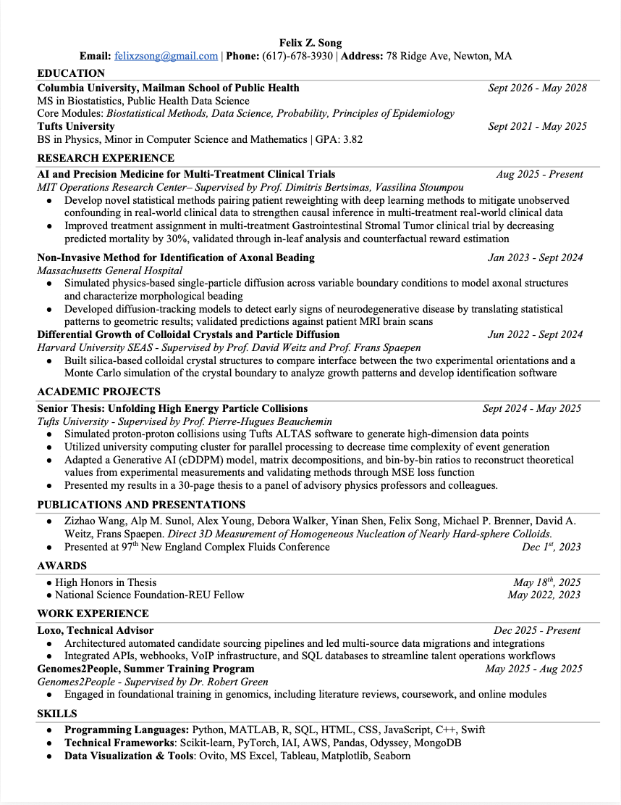

Throughout my K-12 education, I’ve always been interested in pursuing a career in STEM. Not only do I believe that understanding the natural laws of the universe give one insight in almost all walks of life, but to simplify the complexities of life was fun. As a kid, we take a lot for granted and we don’t bother to understand many phenomena. Speeding up as you sled down a hill, why your arm gets red around a scratch or why hot chocolate feels so good in the winter snow. All of the these random happenings can be explained through science and as I grew older, I felt more and more inclined to know the “why” to everything.
Through high school, I found myself gravitating towards science as both the subject itself and the people involved in the field interested me. Watching Bill Nye seemingly control lightning like a superhero seemed like the obvious person to look up to. In chemistry, we mixed different materials to produce a wide variety of fun reactions, like green flames or viscous liquids. In biology, we went on trips into the forest to look at different plant life and how our ecosystem operated, both on a macroscopic and microscopic level. However, I was most interested in physics, where we made toy cars and sent them down ramps to learn about velocity and friction.
For the past four years, I’ve been attending Tufts University, majoring in Physics with minors in Mathematics and Computer Science. In my experience, the support and high quality of education at Tufts has produced a skill set with real-world applications. In the first two years of my undergraduate education, I filled my class schedule with several foundational and high level physics and math courses, spanning from Quantum physics to relativistic E&M and multivariable calculus to mathematical data analysis. As I continued my studies, I realized the important role that computers have and will play in our development of science, so I decided to additionally pursue a minor in computer science. In that time, I’ve learned how computers are utilized in experimental physics and data science, two fields I would love to pursue in the future. As a capstone project, I completed a Senior Thesis advised by Prof. Beauchemin titled “Using AI Methods to Unfold Detector Effects from Ratio Observables Obtained from High Energy Particle Collision Data”. This project taught me so much about the whole process of research and continues to be my motivation to pursue a career in research.
In the summer of 2021 after I graduated high school, I connected with a graduate student, Zsolt Terdik, to learn how the process of research worked. Since I was a high school student, he knew that I would have to learn from the ground up. Focusing on foundational skills, I researched lots of physics and mathematical theory, ranging from Fourier transforms to Monte Carlo systems. After that, Zsolt gave me a project to understand and implement a denoising algorithm into our lab computer to use for future analysis. I was able to successfully implement it on my own Mac computer, so I thought it would be no problem on the lab computer. Subsequently, I spent 50 hours of my summer vacation in the lab trying to figure out a Linux system. At the end of my summer, I was still unsuccessful in a finished installation, as my inexperience in Linux systems and fear of damaging the computer kept me from completing my first project. While I spent some time disappointed in myself, I look back on that experience and I am thankful I failed. It put a burning passion in me to strive for success and look at problems from many different perspectives, and I continued to uphold these values in my future projects.
In the summer of 2022, I was selected for the Harvard 2022 Research Experiences for Undergraduates (REU) program at the School of Engineering and Applied Sciences (SEAS). The SEAS REU program was a 10-week program built for inquisitive students to learn and develop research skills, guided by some of the brightest minds in America. I was fortunate to work in both the Weitz Lab and Spaepen Lab, which focused on the physical properties of a diverse set of materials, from cell structure to crystal lattices. I chose a project centered around biomolecular condensates, a biological structure that acts as a compartment in several cellular processes. Given it was my first experience in a wet-lab research setting, I had to tackle several new challenges and a fair share of setbacks. We were researching the best method to implement microrheology on our condensates, using particle movements to map the structure of condensates, as previous methods were invasive. We used a polymer coating and varied the size of the probing particles to see whether the probing particle could penetrate the outside layer of the condensate through purely non-human mechanical action. Through my ten-week experience, I was able to learn not only how to conduct research, but also how to document research, which I realized was nearly just as important.
In the summer of 2023, I was excited to return to the REU SEAS program and build on the skills I had learned in the previous summer. My new project was centered around crystal structure and epitaxy. It is understandable that two crystals of different density would grow at different rates under the same forces and the same flux of crystal particles. However, what we were interested in was how two crystals of the same density but differing orientation would grow adjacent to each other. In this process, growing crystals under gravitational force took several hours, so it became crucial for me to plan my time and experiments efficiently. We found that one crystal orientation consistently grew faster than the other, and I presented these findings at the 97th New England Complex Fluids Conference. I additionally did another project on computational methods for the identification of crystal structures, specifically looking for small crystal structures appearing during phase transitions. Using the geometry of the Voronoi cell surrounding each crystal particle, we were able to create a working algorithm that could identify clusters of crystal particles.
In the summer of 2024, I wanted to continue my previous summer’s research and participate in other research involving computational physics in biological systems. In regards to the crystal research project, I pushed to understand the mechanism behind the differential growth rates, as it had been unclear why our findings were such. We analyzed single-particle diffusion on different templated surfaces to emulate crystal growth on crystal faces. Then, using particle tracking techniques and analyzing the diffusion of all particles, we saw clear differences in the diffusion rates for each template. Discussing and learning from my mentor and other PhD students in the lab was tremendous for my interest and desire to continue research. To these ends, I also pursued a project centered around developing a non-invasive technique for mapping the structure of the brain, specifically observing the Brownian motion of a water particle in the brain to analyze each axon. This started with simple simulated axons and moved to working with real sample data provided by MGH and more complex simulations. I believe that physics, in tandem with computational power, can have an amazing impact on our society, and I would love to be at the forefront of that.
In the summer of 2025, I completed a training rotation at Genomes2People, focusing on learning foundational skills relevant in genomics and medicine. This included going through courses, researching genetic disease trials and interventions, and reading peer-reviewed papers exploring developments in genomic analytics and return of results. Throughout the training, I was fortunate to attend several conferences where I learned about the most recent developments in genomic medicine, and I was able to make great connections with bright minds in the field.
